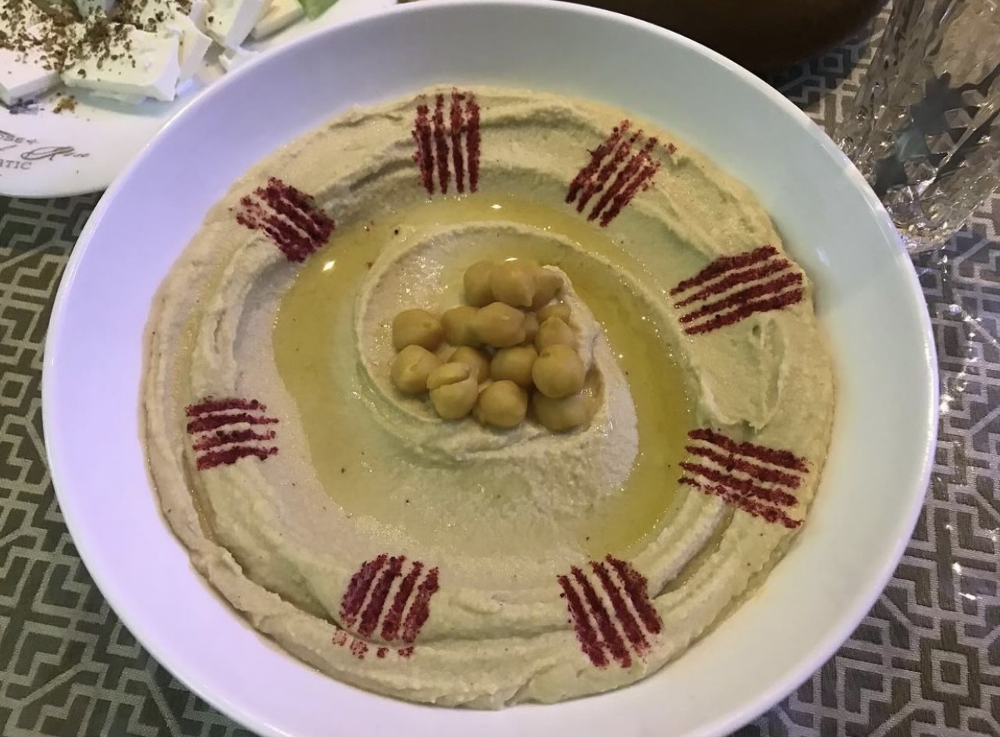
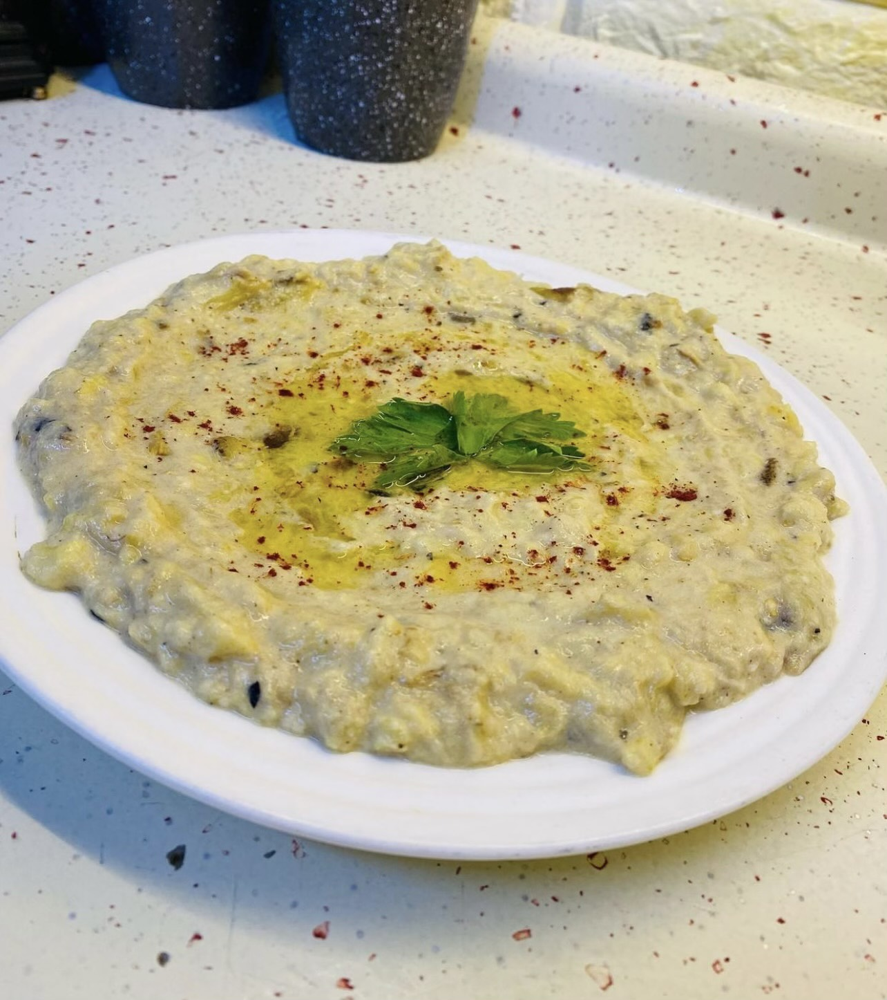
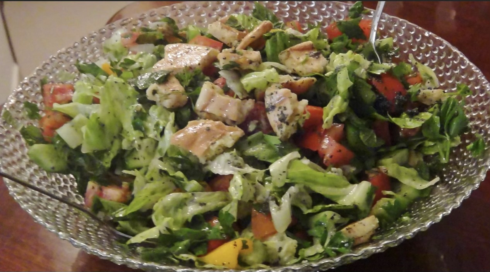
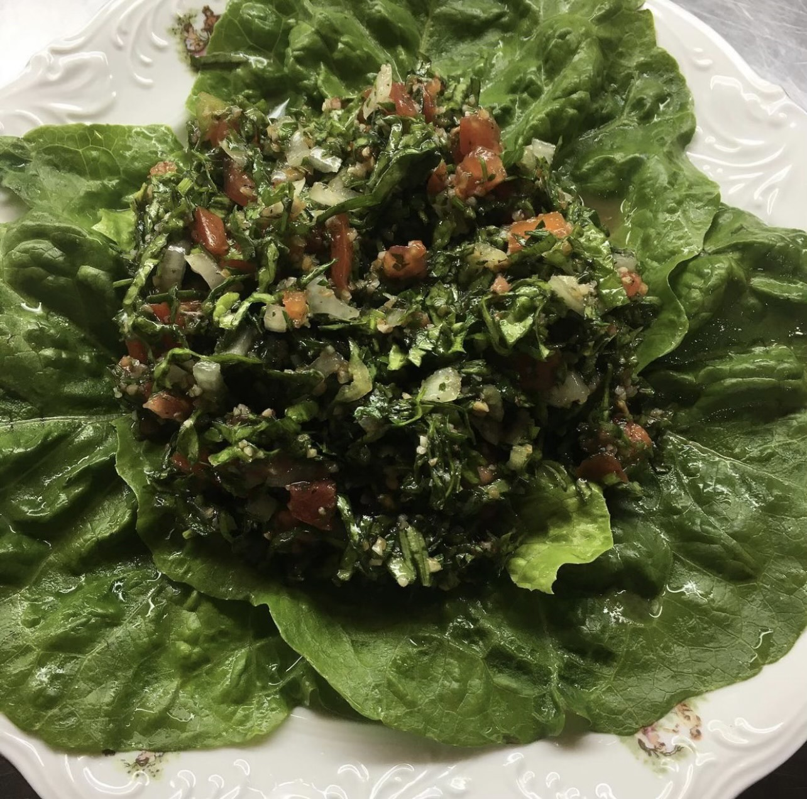

Appetizer and Salad Recipes:
Hummus

Ingredients:
- 16 ounces of washed chickpeas
- 1/2 cup of tahini
- 1/4 cup of fresh lemon juice
- 1 large garlic clove
- 1 1/2 teaspoons of salt
- Olive oil
- 3 ice cubes
- Paprika
Directions:
- In a food processor combine all of the ingredients except for the paprika
- Blend the ingredients and then while blending, slowly add water until the hummus is soft and fluffy,
but not runny
- Adjust the lemon juice and salt to taste
- Place hummus on a serving plate and add olive oil and paprika for garnish
- Enjoy!
Baba Ghanoush

Ingredients:
- 2 medium sized eggplants
- 1/3 cup of tahini
- 3 cloves of garlic, finely chopped
- 1/4 cup of fresh lemon juice
- Salt
- Olive oil
- Paprika
- Parsley
Directions:
- Roast the eggplant in the oven
- Peel the eggplant and place it into a bowl and let it cool down to room temperature
- Add tahini, chopped garlic, lemon juice, salt, and one tablespoon of olive oil to the bowl
- Mash the everything in the bowl together
- Adjust the salt, lemon juice, and tahini to taste
- Drizzle with olive oil and garnish with parsley
- Enjoy!
Fattoush

Ingredients:
- 2 pita bread cut into small 1 inch squares, fried until golden brown
- 3 medium tomatoes chopped
- 3 medium cucumbers, coarsely chopped
- 1 romaine lettuce, cut into 3/4 inch strips
- 1 cup of chopped parsley leaves
- 1 bundle of fresh mint leaves
- 1 large bell pepper, chopped
Dressing ingredients:
- 2 tablespoons of sumac spice
- 4 tablespoons of fresh lemon juice
- 1 tablespoon of pomegranate molasses
- 2 small garlic cloves, minced
- 1 tablespoon white vinegar
- 1 tablespoon of dried mint
- 1/2 cup of olive oil
- salt
Directions:
- Combine the dressing ingredients together, whisk until well mixed
- Mix the vegetables in a large bowl
- Add 3/4 of the dressing mix and toss salad until well coated
- Adjust dressing and salt to taste
- Add the fried pita bread and gently toss it into the salad
- Enjoy!
Tabouleh

Ingredients:
- 1/2 cup of bulgur
- 10 bunches of fresh parsley
- 2 lemons
- 3 large tomatoes
- 1 yellow onion
- 3 stems of green onions
- olive oil
- salt
Directions:
- Finely chop the parsley
- Cut the tomatoes into small cubes
- Finely chop the yellow and green onions
- Soak the bulgur in lemon juice for an hour
- Mix the vegetables with the soaked bulgur
- Add salt and olive oil
- Adjust the lemon juice and salt to taste
- Enjoy!